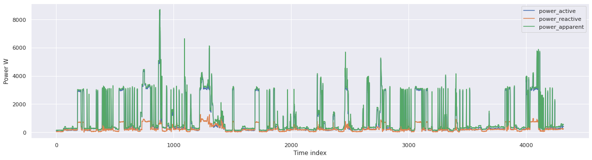

Getting Started 🤗#
Install XGen Time Series using pip#
pip install xgents
Use load_dataset module to load streaming data 📂#
dataset = xgents.load_dataset(name_dataset="uk-dale", streaming=True)
Once the loading process is complete, we are able to observe specific details regarding the features, namely their powers (active, reactive, and apparent).
dataset.attrs['infos_features']
array(['power_active', 'power_reactive', 'power_apparent'], dtype=object)
The “infos_targets” provide valuable insights into the types of machines and devices contained within the dataset. In this particular case, there are six different devices present.
dataset.attrs['infos_tragets']
array(['washing_machine_power_active', 'dishwasher_power_active',
'fridge_power_active', 'oven_power_active', 'stove_power_active',
'clothes_dryer_power_active'], dtype=object)
ID = "ID_40"
X = np.array(dataset[ID]['data'][:])
y = np.array(dataset[ID]['label'][:])
Seaborn plot of dataset loaded#
import numpy as np
import matplotlib.pyplot as plt
import matplotlib.pyplot as plt
import seaborn as sns
rc = {'axes.facecolor':'white',
'axes.grid' : True,
'grid.color': '.8',
'font.size' : 15}
plt.rcParams.update(rc)
np.random.seed(sum(map(ord, 'aesthetics')))
sns.set()
plt.figure(figsize=(20,5))
plt.plot(X, label=dataset.attrs['infos_features'])
plt.xlabel('Time index')
plt.ylabel('Power W')
plt.legend()
plt.show()

Use the below pip command to install XGenTS with all of its Optional dependencies.